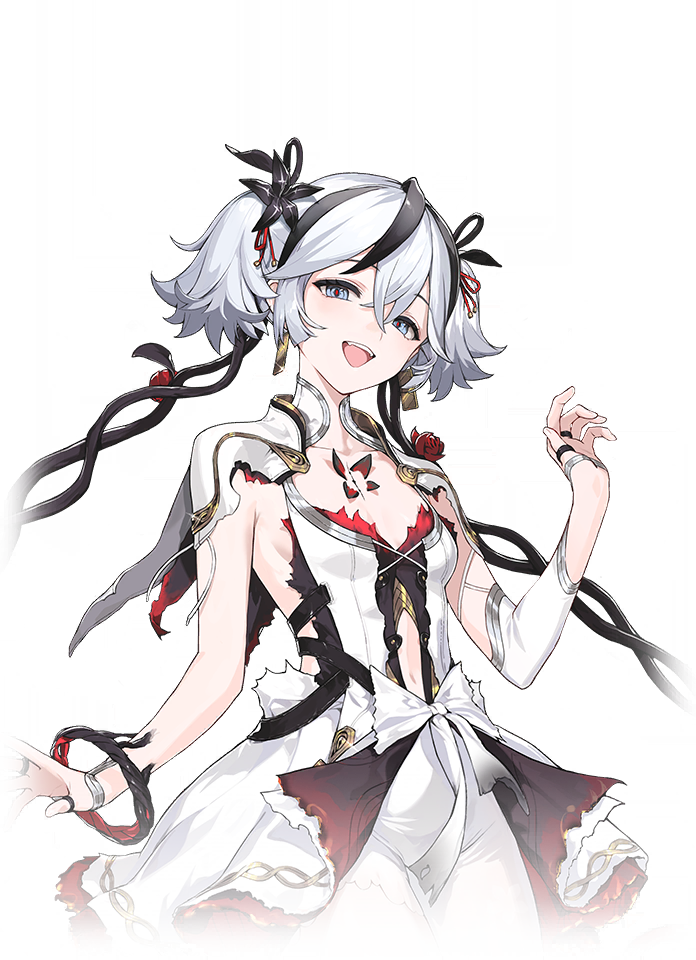

КАК ДОСТАВИТЬ СЕБЕ УДОВОЛЬСТВИЕ С ПОМОЩЬЮ ХОМЯЧКА
Нет ничего круче, чем купить хомячка и засунуть его себе в задницу. Для этого Вам потребуются следующие подручные средства:
— одна бутылочка КейВай (разогревающий любрикант);
— один моток скотча;
— один хомячок небольшого или среднего размера;
— одна бутылочка Детола (спиртосодержащее дезинфицирующее средство).
Первый шаг – это покупка собственно хомячка. Постарайтесь выбрать самого энергичного, смысл этого Вы поймёте позже. Когда принесёте хомячка домой, остригите ему когти.
Затем вылейте Детол в тазик с водой, чтоб убить все бактерии на шерсти и коже животного. Постарайтесь, чтоб раствор не попал на мордочку хомячка, Вы же не хотите его убить раньше времени! Мордочку осторожно протрите ваткой со спиртом. Вымойте и высушите зверька, затем нанесите на всё его тельце толстый слой любриканта.
Прежде, чем приступать к следующим шагам, убедитесь, что скотч у Вас под рукой. Положите рядом ножницы и немного отмотайте конец скотча, потому что дальнейшие действия с ним Вам придётся выполнять одной рукой.
Теперь возьмите хомячка и осторожно введите его себе в анус мордочкой наружу. Таким образом он не задохнется слишком рано. Свободной рукой раздвигайте вход в анус и помогайте продвигать хомячка внутрь. Как только хомячок будет полностью внутри Вас, положите указательный палец на лобик хомячка и протолкните его ещё немного глубже.
Теперь свободной рукой быстро заклеивайте себе задницу скотчем. Постарайтесь, как только Вы заклеите анус, обмотать скотч вокруг талии крест накрест и ещё раз между ног, так он будет лучше держаться.
Теперь начинается самое классное. Хомячок начинает бороться за свою жизнь, извиваться и скользить внутри Вас, но так как выход из клетки под названием Ваша жопа заклеен скотчем, выбраться он, естественно, не может. Его движения в прямой кишке принесут Вам столько удовольствия, что за те несколько минут, пока он будет жив, вы сможете кончить как минимум два раза! Обычно хомячки остаются живы пять–семь минут и, в сочетании с согревающим любрикантом, эти минуты кажутся просто непередаваемыми!
Если Вы перестали ощущать движение внутри, значит хомячок закончился. Отклейте скотч, вытащите мёртвого зверька из жопы, заверните в пластиковый пакет и выбросьте в мусорку.
 Персонажи
Персонажи Отряды
Отряды Тирлисты
Тирлисты Карточки
Карточки